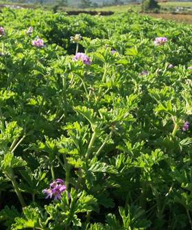
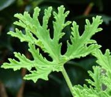
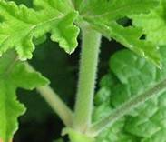
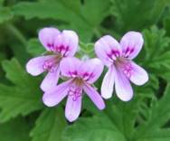

HORT 282 :: Lecture 12 :: GERANIUM

Plant Profile
Family : Geraniaceae
English name : Geranium
Indian name : Geranium (Hindi), Pannirsoppur, Pannir patre (Kannada), Geranium (Tamil)
Species and : Pelargonium graveolens L.Herit, P.radula, P.fragrance
Varieties : Algerian or Tunisian, Reunion or Bourbon,KKL-1, Sel-8, Hemanti, Bipuli, Kunti
Distribution : India, South Africa, Belgium, Chinna, Congo,Egypt, France, Madagascar, Morocco, ReunionIslands, Spain, former USSR countries
Uses : Cosmetics, Perfumery
 Geranium (Pelargonium graveolens L.Herit.) is one of the important aromatic plants, yielding an essential oil which is highly priced for its very profound and strong rose-like odour. The plant is also known as rose geranium. The chief constituent of the oil are geranial and citronellol. The oil also contains α-pinene, β-pinene, α-terpinene, myrcene, α-phellandrene, limonene, cis-ocimene, trans ocimene, p-cymene, terpinolene, cis-roseoxide, trans-rose oxide, methone, trans-linalool, iso-menthone, caryophyllene, geranyl acetate, nerol, geranyl formate, geranayl butyrate and geraniol.
The pure geranium oil is almost a perfume by itself and blends well with all other perfumes. It is widely used in scenting soaps and for the isolation of rhodinal which forms part of most high-grade perfumes. India is importing more than 20 t of this oil from other countries to meet the local demands of the Indian perfumery industries, in addition to an indigenous production of only about 20 t of oil annually.
Origin and Distribution
Geranium is a native of the Cape Province in South Africa. It is commercially cultivated in France, Belgium, Spain, Morocco, Madagascar, Egypt, Reunion Island, Congo, China, India and the former USSR countries. The world production of geranium oil is estimated at 250-300 t, whereas the demand is more than 500 t annually. The first planting of high-yielding Pelargonium graveolens, introduced from Reunion Island was grown at Yercaud by a French planter, in the early twentieth century. From that time onwards it has been cultivated as a commercial crop, but only in high altitude areas with a milder climate. However, the crop also comes up well in the South Indian plains. Presently, it is being commercially cultivated mainly in the Nilgiris and Kodaikanal Hills of Tamil Nadu and in and around Bangalore in Karnataka in an area of about 2 000 ha.
Description of the Plant
The commercial oil of geranium is obtained from Pelargonium graveolens, L.Herit. (2n=88) of the family Geraniaceae. There are about 600 species of the genus Pelargonium, many of which possess an agreeable odour. Other species like P.radula, P.fragrance are of lesser importance and have not attained any commercial significance.
Geranium is a bushy, aromatic plant. The stem is cylindrical, woody at the base, pubescent, green when young and turning brown with age. The leaves are alternate, stipulate, simple, with 5 primary lobes and secondary lobes and densely pubescent. The leaves are highly aromatic in nature. The inflorescence is umbellate and hairy. The flower is bisexual, hypogenous, with a pink corolla; the two posterior petals are larger with reddish-pumple markings. There are 10 stamens, the filaments are sub equal, united at the base; the anthers are 7, dithecous and shed easily. The ovary is hairy, superior, pentacarpellary and syncarpous; the style is hairy, breaking up distally into five stigma.
|
 Leaf |
 |
 |
Varieties
1. Algerian or Tunisian
This type of geranium is slender with flowers of a dark pink colour. It is being grown in the Nilgiris and is unsuitable for wet conditions. This variety yields 50-60% more oil with a more delicate odour then that of the Reunion type.
2. Reunion or Bourbon
Grown in the Nilgiris and Anamalais, the plant is sturdier with light-pink flowers and more suitable for wet conditions. The oil content is higher during the summer months from April to June. The terminal portion with 6 to 12 leaves contains more oil than the middle and basal portions.
In the evaluation trail of the Algerian and Reunion types, POG-7 and PG-20 respectively at the Horticulture Research Station, Kodaikanal, the clone PG-7 recorded 0.3% essential oil and 2.32 ml of oil per plant, and has been released under the name ‘KKL-1’’. The Indian Institute of Horticultural Research (IIHR), Bangalore, has found ‘Sel-8’ a Reunion type, as the highest yielder under Bangalore conditions and has recommended it for cultivation. ‘Hemanti’ ‘Bipuli’ and ‘Kunti’ are the other varieties released by the CIMAP, Lucknow, for cultivation in the plains of North India. Kelkar, Ooty, and IIHR Sel-8 are the other varieties available in this crop.
Soil
Geranium is shallow-rooted crop and, as such, it requires well drained porous soil. The crop is found to perform well in red lateritic soils with a pH of 5.5-8.0, though a calcium rich porous soil is the best.
Climate
Geranium can be grown in temperate, subtropical and tropical climates at various altitudes from 1 000 to 2 200 m. It thrives best in subtropical climates with a temperature ranging from 5 degree C to 23 degree C. However, temperatures below 3 degree C will kill the plant. Warm winters coupled with mild summer temperatures and, well-distributed annual rainfall ranging from 100-150 cm is ideal. However, heavy rainfall results in water-logging, causes root-rot and stunted growth. It has been observed that it grows equally well at much lower altitudes and tolerates higher temperatures up to 43 degree C in the plains when grown under irrigated conditions.
Propagation
Geranium is easily propagated by cuttings, since there is no seed setting in geranium, vegetative propagation is must. Terminal cuttings about 20 cm long and consisting of about 8 nodes are the best suited material for propagation, as they give 80% rooting even without any treatment. However, the middle portion and basal cuttings are reported to give poor rooting, which can be improved but treating them for 6 minutes with growth regulators like IBA or IAA at 200 ppm. Thus, a rooting of 80% and 6505 respectively can be obtained.
The cuttings are planted in raised beds 3 m long and 1 m wide. The soil should be well mixed with powdered FYM. The cuttings are planted closely at a spacing of 8-10 cm. Before planting, the cut ends of the cuttings are dipped in 0.1% Benlate solution. Before root initiation, temporary shade is provided and the beds are watered regularly. The nursery is sprayed with a 0.2% Urea solution at biweekly intervals and the cuttings are ready for transplanting. They can also be rooted in polythene bags, which help to avoid damage to the root-system while planting in the main field. This practice ensures a high percentage of success in the field.
Recently, its propagation through leaf petioles had also been reported to give a good rooting percentage (75%), which will help to multiply this plant in larger numbers than the traditional method of propagation using 20 cm-long cuttings. The CIMAP, Lucknow, has developed a protocol for large –scale production of geranium cell clones and plants have been obtained under field conditions with improved oil-yield and quality.
Planting and After-care
About 30,000 cuttings are required for planting an area of 1 ha. Before planting, the land should be properly prepared by ploughing (disc) and brought to a fine tilth. Ridges and furrows are made, the application of fertilizer and irrigation should be done a day prior to planting. The cuttings are carefully dug out from the nursery and planted at a spacing of 60 cm x 60 cm. They must be irrigated immediately after planting. Irrigation is continued on alternate days for about 10-15 days and then reduced to twice a week. The schedule is modified during the winter and summer months at intervals of 7 to 10 days, depending on the situation. Though geranium tolerates short periods of drought, water-logging of the crop must be completely avoided. The crop c growth is slow initially; weeds should, therefore, be removed periodically. Intercropping of cowpea or black gram is beneficial during the log phase and they do not affect the geranium crop. It has been experimentally observed at the CIMAP. Lucknow, that polyhouse cultivation reduces weed infestation, the number of irrigations and produced less weed biomass.
Manures and Fertilizers
Prior to transplanting the cuttings, 10 t of good quality FYM, 35 kg N,35 kg P2O5 and 35 kg K2O/ha are incorporated into the soil in the form of urea, super phosphate and Muriate of potash. A second dose of nitrogen at 35 kg/ha is applied about 2 months after the first application, Further, nitrogen is given in two equal split doses for each harvest-the first dose being just after the crop is harvested and the second two months later. Altogether, 210 kg/ha/yr of N is applied to the crop in six equal doses to cover three harvests. Application of 30 kg N/ha (15 kg/ha as basal and 15 kg as a foliar spray with 1% urea solution, 45 and 90 days after basal application) is reported to increase herbage yield and oil yield by 447% and 140%, respectively, over the control.
In addition, the application of 20 kg/ha of zinc Sulphate and 10 kg/ha of boron has been reported to increase the herbage yield. Similarly, an application of copper (20 kg/ha) and molybdenum (30 kg/ha/year) in four split doses after each harvest has been found to increase the yield by 37%.
Pests and Diseases
The incidence of pest and disease is not severe in the geranium crop. However, it is found to be affected by wilt disease, caused by the Fusarium species, and Botrydeplodia theobromae, which are soil borne fungi.
Recently, Alternaria alternate has been reported to cause leaf blight in the Terai region and Kumaon Hills of Utter Pradesh and Sclerotium rolfsii causes, collar-rot disease and Rhizoctonia solani causes root-rot and wilt in the Kodaikanal region of Tamil Nadu.
To avoid wilt disease, the following prophylactic measures are recommended.
- Dip the cuttings in 0.03% Benlate solution at the time of planting in the nursery.
- Prior to transplanting the rooted cuttings must be again dipped in 0.03% Benlate solution and then planted.
- The crop is sprayed with 0.03% Benlate solution about 2 weeks before it is harvested. Also after the harvest it is repeated, so that the cut-ends are drenched with the fungicide.
- It has been observed at the CIMAP, Lucknow, that the cultivation of geranium in association with marigold (Togetes minuta) improves the survival of geranium plants over the monsoon time in the North Indian plains. Roots-knot nematodes, Meloidogyne incognita and M.hapla, a have been found to affect the geranium plant. Application of Aldicarb @ 20 kg/ha to the soil reduces the incidence of root-knot.
Harvesting
Geranium is harvested 4 months after transplanting, when the leaves begin to turn light-green and exhibit a change from a lemon-like odour to that of rose. However, this requires careful observation and experience. The crop should be harvested using a sharp sickle and sent for distillation immediately. The use of sharp sickle is important as it minimizes the jerks, pulls and damage to the crop while harvesting. After every harvest, hoeing, fertilizer application and irrigation are done according to the schedule. The plant then puts forth fresh shoots, grows faster, and reaches the next harvesting stage in 4 months. Thus, a total of 3 harvests can be obtained for 3-6 years. Cultivation under polyhouse conditions is reported to reduce the harvest time by 21 days.
The essential oil is distributed over the green parts of the plant, particularly in the leaves. The oil content is higher during the summer months, from April to June. The terminal portion with 6-12 leaves contains more oil than the middle and basal portions.
Yield
The quality and yield of oil will be better if the crop is harvested at the appropriate time of maturity. For a higher yield, a good plant population in the field is necessary. A minimum of 25,000 plants should be maintained in a hectare in a year which, in turn, may yield 15 kg of oil on distillation. The recovery of the oil ranges from 0.08 to 0.15%, depending upon the season of harvest and type of material. Cultivation under polyhouse cover is reported to increase herb and oil yields up to 53% over the conventional planting of the geranium crop.
Distillation of Oil
The freshly-harvested terminals are used for the distillation of oil. The plant material is stacked near the stills for about 12 to 24 hours. This results in a slight fermentation and splitting of the glycosides, which increases the yield of oil. The oil is extracted by a simple distillation method. The herbage is tightly packed in a still over the perforated grid and tamped down tightly and the still-head is clamped shut. The steam is generated in a separate boiler and conveyed to the still. The oil volatilizes and escapes along with the steam vapours, which is later condensed by passing it through a condenser with running cold water. The condensed oil is separated from the water by the differential density method and clarified by filtering it with activated carbon.
- Geranium is a native of __________
- ____________ can be obtained as a bye-product from geranium stem and leaves after extraction of oil
- Oil content of geranium ranges from __________
- Propagation of geranium is __________
- Botanical name for geranium _________
| Download this lecture as PDF here |